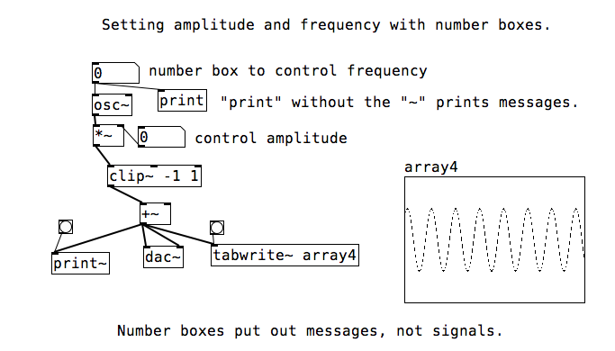

Another Tangent: Trying to Make a Theremin
I’ve finally created something tangible. So far, my definition of success at RC has been amorphous and open-ended: if I’ve learned, I’ve succeeded. That hasn’t changed, but I didn’t realize how much I missed seeing (or, in this case, hearing) real output from something I wrote.
My idea for this project was to build a theremin. At its simplest, a theremin is an electronic instrument that produces a sine wave based on the position of a players hands with respect to two antennae. One antenna controls the amplitude of the wave (the volume of the sound) and the other controls the frequency (or pitch). I decided my basic approach would be to buy two IR sensors, hook em up to an arduino, generate a sine wave using a programming language of my choice, read in the data from the arduino and use the output from the sensors to shape the wave. Although this approach is pretty close to the end result, the means by which I got there changed significantly throughout this process.
Initial inspiration
The idea to do this originally came from messing around with Pure Data. Pure Data, and its commercial counterpart Max/MSP, are essentially visual programming languages for digital signal processing. They can be used for generating audio (or video) or to manipulate input streams of audio (or video), among many other things. Pure Data (and the set of exentions to Max that became MSP) is written by Miller S. Puckette, who has a number of recorded courses available on his website.
I’ve always wanted to know more about Pd and Max, and since RC is the time to scratch your itches I decided I would dig in and try to make some noise. I started watching the videos for Mr. Puckette’s course Computer Music 1. After a few videos, the class had a working oscillator in Pd with controls for the amplitude and frequency of the generated wave. Here’s a picture of the Pd “patch” from the class:

I saw this patch and thought “hey, since Pure Data is so good at taking external input, maybe I could hook up an arduino and make a theremin!” After some searching, the most promising find was pduino. This is a library to model arduino connections Pd objects. It was last updated in 2012 and no longer supported the versions of either arduino or Pure Data that I had. So I shelved the project for a few days and continued with the computer music lectures.
A change of direction
The inspiration to pick this project back up came while I was looking for a project to do in Rust. I was looking into audio decoding (this was toward the very end of my mp3 decoding project) when I came across cpal, an audio library in Rust that a few other Recursers had used. Rust being a lower-level language, I felt that there might be a library to process data coming from an arduino. I came across serialport-rs, and the theremin was back on. With cpal, I have a way to generate a sine wave. With serialport-rs, I have a way to read data from an arduino and print it to my console.
The bugs
The first issue I ran into was deserializing the arduino data. I could print the data just fine using io::stdout().write_all, but whenever I tried to convert the data to an integer, I would get astronomically high values. The IR sensor usually outputs numbers between 100 and 500, and I was getting values between 3 and 4 million. I was trying both Serial.print and Serial.write in my arduino code. The documentation for Serial.print says that values are sent as their ASCII values and Serial.write says values are sent “as a byte or series of bytes”.
At this point, both the serial monitor in the arduino IDE and the output from io::stdout().write_all were showing the correct values, so I decided to print the raw buffer to try and get to the bottom of this. Wouldn’t ya know it, Serial.write was just sending the ASCII values of each digit. So instead of reading an array of bytes as an integer, I first needed to convert each byte to a character, concatenate them together, then cast the resulting string to an integer. I must be doing something wrong here, but that’s for future me to figure out.
Finally, I had my arduino talking to my computer and my computer listening to the arduino. Time to run my code, wave my hand around and… hear nothing.
Once the disappointment dissipated, I formed a hypothesis for what was going wrong. See, the way I was generating these samples was by providing a next_sample() function that generated, as you may have guessed, the next sample to play. This is the definition of that function:
let mut next_value = || {
frequency = (port_reader.read_value() + 100) as f32;
sample_clock = (sample_clock + 1.0 ) % sample_rate;
(2.0 * (sample_clock * frequency * 2.0 * 3.141592 / sample_rate).sin())
};
I’m using a sampling rate of 44.1kHz, so this function is getting called 44100 times a second. It’s likely that reading the values is taking too long and we’re consistently missing the deadline and therefore nothing’s being sent to the speaker (I’m not sure if this is how the cpal code actually works, but it seems to have given me a workable mental model).
In an attempt to read values without taking up too much time, I decided to simply read a value every 1000 samples:
let i = 0;
let mut next_value = || {
i += 1
if i % 1000 == 0 {
frequency = (port_reader.read_value() + 100) as f32;
}
sample_clock = (sample_clock + 1.0 ) % sample_rate;
(2.0 * (sample_clock * frequency * 2.0 * 3.141592 / sample_rate).sin())
};
This worked to produce audible sound, but another issue quickly popped up: I was now generating a backlog of sensor output. I would move my hand and several seconds would pass before I’d hear the pitch change. I needed to throw away samples that weren’t going to be used. This problem reminded me of a construct I was familiar with from Golang: buffered channels.
This was to be my first encounter with Rust’s “fearless concurrency”. Another Recurser pointed me to Rust’s version of channels. They felt similar to Golang’s channels, but different in ways that make sense for Rust. Instead of a function creating and returning a channel for another goroutine to listen to, you create a sender and receiver in one thread and move them around as necessary. I only wanted one thread to send values and another to receive them, so my code ended up looking like this:
let (tx, rx): (SyncSender<i32>, Receiver<i32>) = mpsc::sync_channel(1);
let mut i = 0;
thread::spawn(move || {
loop {
if let Ok(_) = tx.try_send(port_reader.read_value()) {
continue;
}
}
});
let mut next_value = move || {
i += 1;
if i % 1000 == 0 {
if let Ok(val) = rx.recv() {
frequency = (val + 100) as f32;
}
}
sample_clock = (sample_clock + 1.0 ) % sample_rate;
(2.0 * (sample_clock * frequency * 2.0 * 3.141592 / sample_rate).sin())
};
This is considerably more code just to speed up next_value, so let’s break it down.
The first line sets up a synchronous channel with a buffer size of one and gets a reader and sender for that channel. Writing to a SyncBuffer will block until the sender can send its value, so instead we call try_send, which will return immediately (with an error) if the buffer is full. This way, we will not clog the pipeline with sensor values and the latency between user movement and the subsequent frequency change will be lower.
You’ll notice that the definitions of both next_value and the anonymous function we pass to the new thread start with the keyword move. This is to move the values that are closed over into each new thread. This has to do with Rust’s concept of ownership and borrowing and memory handling and thread safety and all that, which I won’t go into. All that’s important is that once I added move to next_value, everything worked.
The resulting sound is still very crackly, which suggests that we’re reading sensor values too often (and still taking too long to do it). However, if we read any less frequently, then the lag starts to become user un-friendly. Further optimizations will need to be made.
Conclusion
What I’ve got so far sounds nothing like a theremin, but does change the frequency of a wave according to the position of an object relative to a sensor. It’s a bit of a stretch to call it a theremin, but it fits the description of “thing you wave your hands near and then sound happens” which, as far as I’m concerned, is the very definition of a theremin.
The arduino setup was simpler than I thought and consisted of connecting one sensor wire to voltage, another to an output pin, and the third to ground. The code, which is below, consisted of reading and printing the value (along with a newline character so I know when one value ends (serialport-rs did not necessarily read one value per call to read())).
Here is the final result of my arduino code:
const int sensorPin = A0;
void setup() {
Serial.begin(9600);
}
void loop() {
int sensorVal = analogRead(sensorPin);
Serial.print(sensorVal);
Serial.print("\n");
}
It was a lot of fun to do something in Rust that wasn’t straight out of the “getting started” book. It’s channels and struct/method setup reminds me of Golang, as well as the preference for “skinny interfaces” (like having read and write as separate interfaces). It also has explicit inheritance, which I really feel makes code a little more readable.
Rust also has some features that remind me of scala. This includes types like Result or Option. It also has a similar match construct, which is nice.
The Rust code is in the project repo, which I’ve called theremini.
Up next: I need to fix the crackling caused by reading from the serial port, as well as add another sensor to control the amplitude. Maybe I’ll even try to figure out how to make it sound like a theremin.